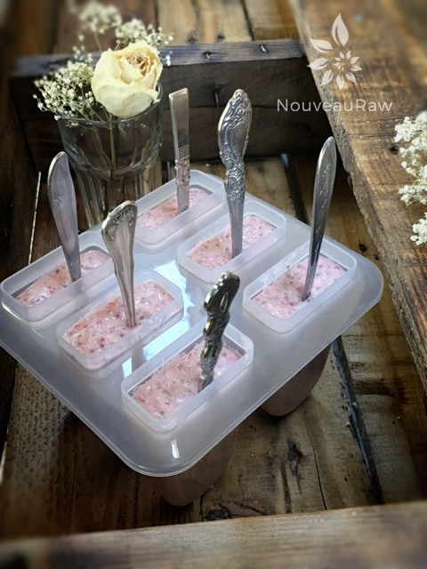
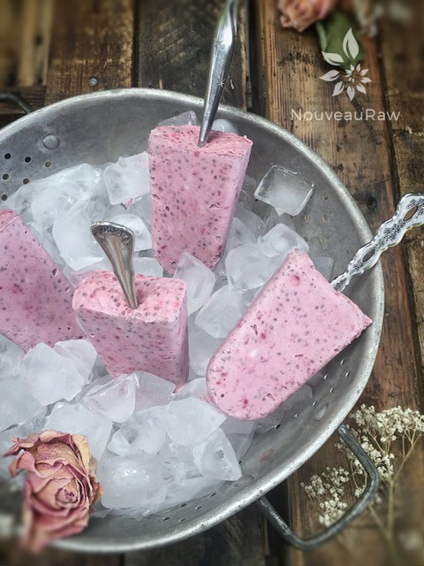
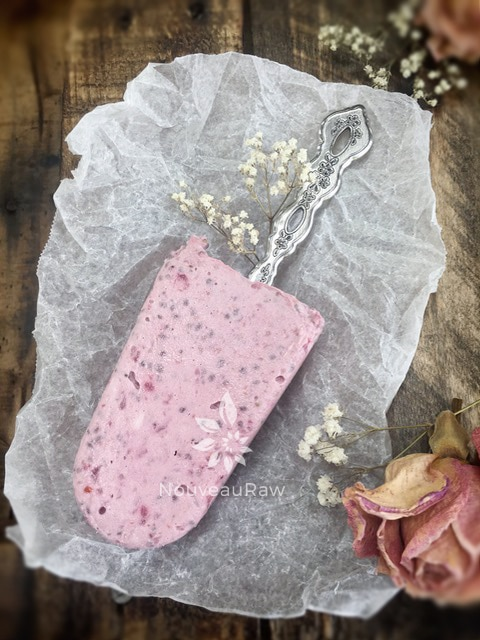

Strawberry Rhubarb Coconut Chia Popsicles
~ raw, vegan, gluten-free ~
There is nothing wrong with elevating the look of popsicles… bringing them up to an adult level. Nothing can take away the child-like feeling one gets when enjoying them. These popsicles are creamy, cold, bursting with sweet summer strawberries and fresh ripened rhubarb.
A Summertime healthy indulgence
You won’t find any artificial ingredients, food dyes, refined sugars, or anything other undesirables in these fine frozen treats. Have you ever stopped to read the ingredient list on commercially made popsicles? If you haven’t, I don’t blame you; it’s scary… there are times when I can’t even pronounce some of the items listed. And my motto is, if I can’t pronounce it, I don’t eat it!
Instead, these frozen treats are loaded with; healthy fats, fiber, omega 3’s, antioxidants, protein, vitamin C, vitamin K, B-complex vitamins, calcium, potassium, manganese, and magnesium.
How could anything with all those nutrients taste so good? Contrary to common belief, we don’t have to suffer when eating healthy. In fact, I find whole, unprocessed foods to have so much more flavor and vibrancy. And it is our job, our responsibility to eat healthily and take care of our bodies, the absolute best way that we can. I mean really, if you don’t take care of your body, where are you going to live?
Since I don’t indulge in sugary treats all that often, I decided to make these sugar-free by using stevia. But I understand that not everyone likes it. If that is you… that’s ok; you can use any liquid sweetener that fits in with your dietary needs. Notice, I said liquid. Granulated sugars won’t mix in well, leaving your popsicle with a grainy texture. Start by adding about two tablespoons worth, taste, and add more if needed. A lot depends on your own sweet tooth level and how sweet your strawberries are.
Oh, I wanted to point out my handy-dandy popsicle sticks… or should I say spoons. I couldn’t readily find my wooden sticks, so I grabbed a handful of spoons from the drawer and slid them in. I love it. I think they look very elegant and in the end, there isn’t a wooden stick to toss in the landfill. Hey, I know they are small, but everything adds up. :) Anyway, enjoy the recipe, and be sure to comment below. I love hearing from you. Many blessings, amie sue
Preparation:
- For the rhubarb, you can follow the link above to see how I made that. This process will help take the tart “bite” away, making it sweet and soft.
- When working with fresh ingredients, it is important to taste test as you build a recipe. Learn why (here).
- In the blender combine the marinated rhubarb, strawberries, coconut cream, almond milk, chia seeds, and stevia. Blend until combined.
- Pour into molds and place in the freezer. Allow them to freeze for 6+ hours or until solid.
- When ready to eat, depending on the shape of the mold used, either roll the popsicle back and forth in the palm of your hands to warm it up just enough to release the insides. Or run the mold under warm water.
- Store popsicles in a freezer-safe bag or container and keep for up to 1 month.
- Freeze in popsicle molds or 3 oz Dixie cups with a popsicle stick inserted. Always use plastic Dixie cups, the paper ones stick, and you have to tear them off of the ice cream.
-
- Store in the very back of the freezer, as far away from the door as possible. Every time you open your freezer door you let in warm air. Keeping these treats way in the back and storing it beneath other frozen-sold items will help protect them from those steamy incursions.
- Ice cream is full of fat, and even when frozen, fat has a way of soaking up flavors from the air around it—including those in your freezer. To keep your frozen treat from taking on the odors, use a container with a tight-fitting lid.



© AmieSue.com